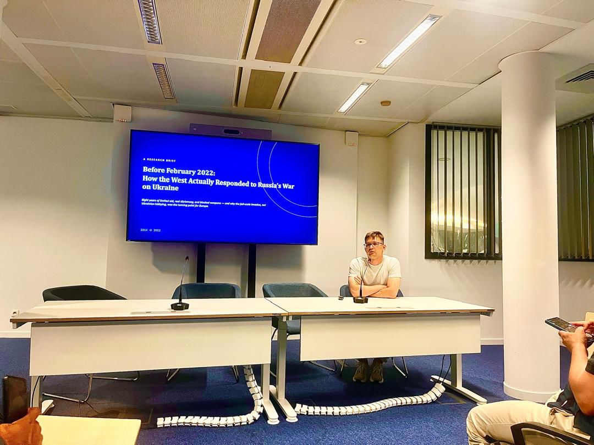
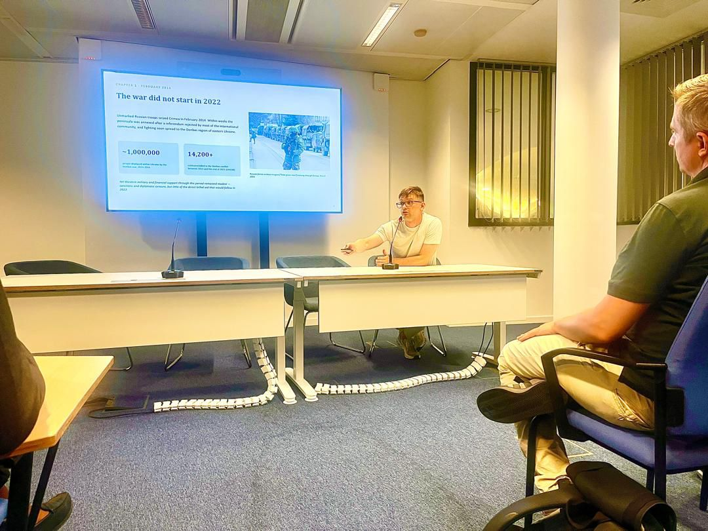
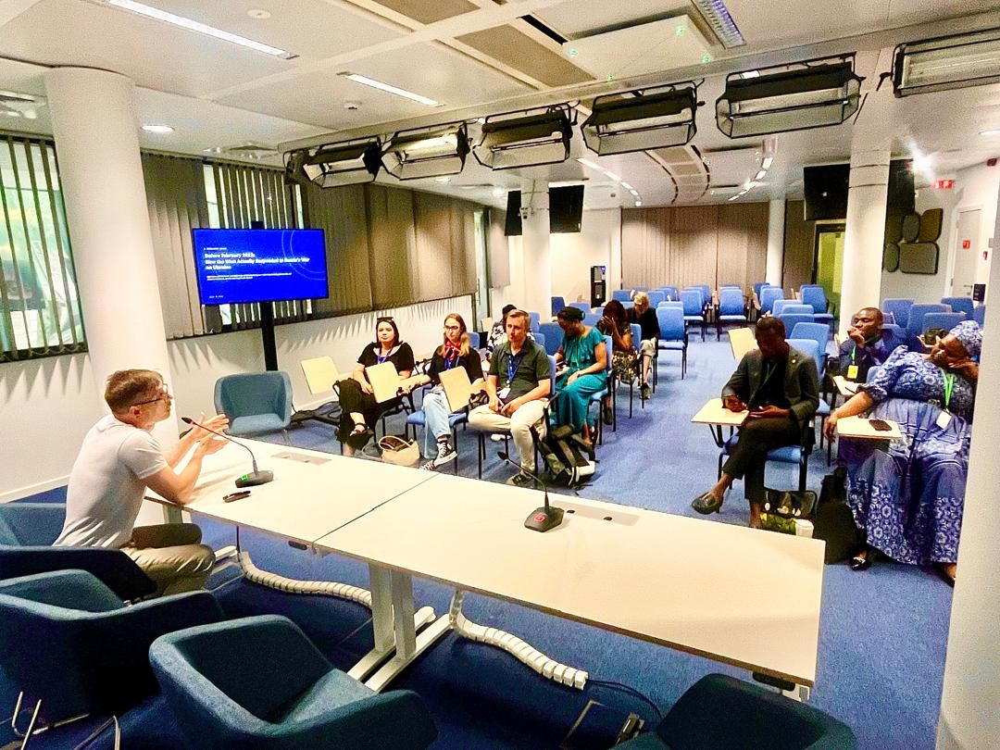

In a briefing room in Brussels, DII-Global Europe chair Vitaliy Sizov opened with a single, deliberately provocative line on the screen behind him: the war did not start in 2022.

The session brought together an international audience of journalists, civil-society leaders and fellows for a research brief titled Before February 2022: How the West Actually Responded to Russia's War on Ukraine. Its argument is simple and uncomfortable: the full-scale invasion of February 2022 was a turning point for Europe — but it was not the beginning of the war. That war had already been running for eight years.
Eight years the West would rather forget
Unmarked Russian troops seized Crimea in February 2014. Within weeks the peninsula was annexed after a referendum rejected by most of the international community, and fighting soon spread to the Donbas region of eastern Ukraine. By the time tanks rolled toward Kyiv in 2022, the human cost of the “forgotten” years was already staggering.
Yet Western military and financial support through this period remained modest. Sanctions and diplomatic censure followed the annexation — but little of the direct lethal aid, and none of the strategic urgency, that would define the response after 2022.
The full-scale invasion, not Ukraine's eight-year defence, was the moment the West treated as the turning point. Understanding that gap is the whole point of the brief.

Why it matters now
For DII-Global Europe, this is more than a history lesson. The way the West narrates the start of the war shapes how it defends against the disinformation built on top of that narrative — and how seriously it takes early warnings the next time. Reconstructing the real timeline of limited aid, quiet diplomacy and blocked weapons is part of the same information-integrity mission that runs through all of our work.
The briefing closed with a discussion that ran well past its scheduled hour: a room of practitioners from across Europe and beyond comparing what they remembered of 2014–2021 with what the record actually shows.

This brief is part of our flagship programme. The Transatlantic Truth Lab publishes research on information integrity, energy security and critical minerals for policy audiences.
Explore the Transatlantic Truth Lab ↗